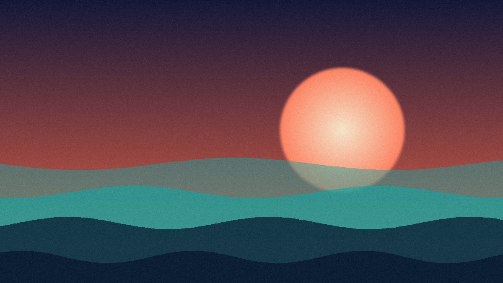

Musica con raiz
Flamenco de vanguardia, folk mediterráneo, electrónica con instrumentos acústicos y cantautoras que escriben en cuatro lenguas.

La séptima edición del Festival ONES vuelve a la playa de la Almadraba del 17 al 19 de julio. Dieciocho grupos, tres escenarios frente al mar y un mercado artesano que abre al atardecer. Las entradas de abono salen a la venta el 3 de marzo.
Flamenco de vanguardia, folk mediterráneo, electrónica con instrumentos acústicos y cantautoras que escriben en cuatro lenguas.
Los tres escenarios están a menos de cien metros de la orilla. El Escenario La Cala funciona solo al atardecer, con el público sentado en la arena.
Nada empieza antes de las 18:00 y todo termina a las 03:00. Puedes venir, dormir en tu casa y volver al día siguiente.
Aviso de última hora Las entradas de día para el viernes 17 están agotadas. Quedan abonos de tres días y entradas para sábado y domingo.
Programamos la música que suena a este lado del Mediterráneo, y la programamos a una hora en que se pueda escuchar sin gritar.
-Clara Ferrer, directora del festival
Ayuntamiento de Alicante hola@festivalones.example